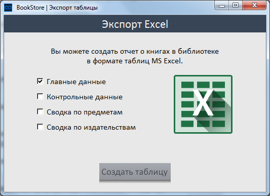
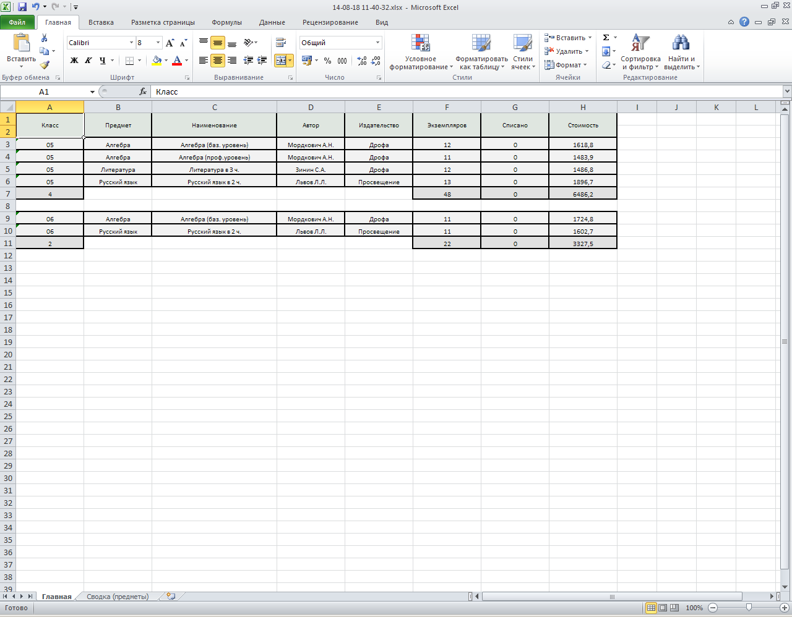

С помощью инструмента «Экспорт» Вы можете создавать отчеты по данным о книгах
в базе в формате таблиц MS Excel. Для того чтобы начать создание отчета воспользуйтесь инструментом «Экспорт таблиц» на первой странице BookStore (страница основных действий).
Вам откроется следующее окно.

В нем Вы можете выбрать те элементы отчета, которые Вам нужны. Для того чтобы
выбрать элемент отчета, нажмите на него одним щелчком мыши. Он выделится галочкой
справа.
По умолчанию у Вас уже стоит один элемент – «Главные данные» , Вы его можете снять
тем же методом, что и поставить – нажмите по элементу и рядом с ним галочка исчезнет.
После того, как Вы выбрали нужные Вам элементы, нажмите «Создать таблицу».
Далее BookStore сгенерирует и откроет Вам таблицу MS Excel в папке для генерации
данных таблиц, сменить которую Вы можете через
настройки BookStore. Здесь представлен пример подобной таблицы.

Название файла таблицы BookStore генерирует сам - это точные дата и время создания
таблицы в формате «ГГ-ММ-ДД ЧЧ-ММ-СС».